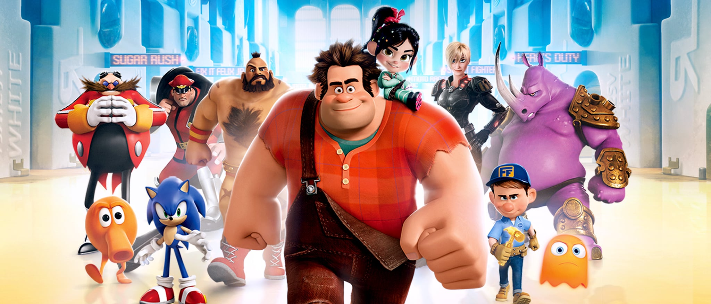

About Ralph
Ralph is awesom! He's an 8-bit videogame bad guy who travels the length of the arcade to prove that he's a good guy.
Ralp and his friends
Ralph's characteristics
- He's got big hands
- He's treated as bad ass
- he's trying to be the good guy
Ralph's Friends
Ralph has some awesome friends. I think his best friend is Glitch. She's awesome. Click on the links below to read more about them